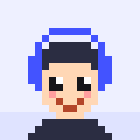

Game Development
게임 엔진과 게임플레이 구현
01 · About

안녕하세요, 인디 게임 개발자 ADOHI입니다. ADO STUDIO에서 Unity와 Godot으로 작은 게임을 만들고 있습니다.
짧은 시간 안에 아이디어를 플레이 가능한 프로토타입으로 만드는 과정을 좋아해 여러 게임잼에 참가해 왔고, 얼굴 인식·MediaPipe·Stable Diffusion처럼 게임에 AI와 컴퓨터 비전 기술을 접목하는 실험에도 관심이 많습니다.
지금은 Codyssey 과정에서 데이터베이스와 자료구조, 그리고 웹의 기초를 다지고 있습니다. 이 사이트도 외부 라이브러리 없이 순수 HTML·CSS·JavaScript만으로 처음부터 만들었습니다.
02 · Skills
GitHub 저장소에서 실제로 사용한 기술을 분야별로 정리했습니다.
게임 엔진과 게임플레이 구현
프로젝트에서 사용해 본 언어
이 포트폴리오를 만든 기술
개발 도구와 관심 기술
03 · Projects
GitHub API로 실시간으로 불러온 저장소입니다. 직접 만든 저장소만 최근 업데이트 순으로 보여 줍니다.
04 · Contact
함께 게임을 만들거나 이야기를 나누고 싶다면 편하게 연락 주세요.